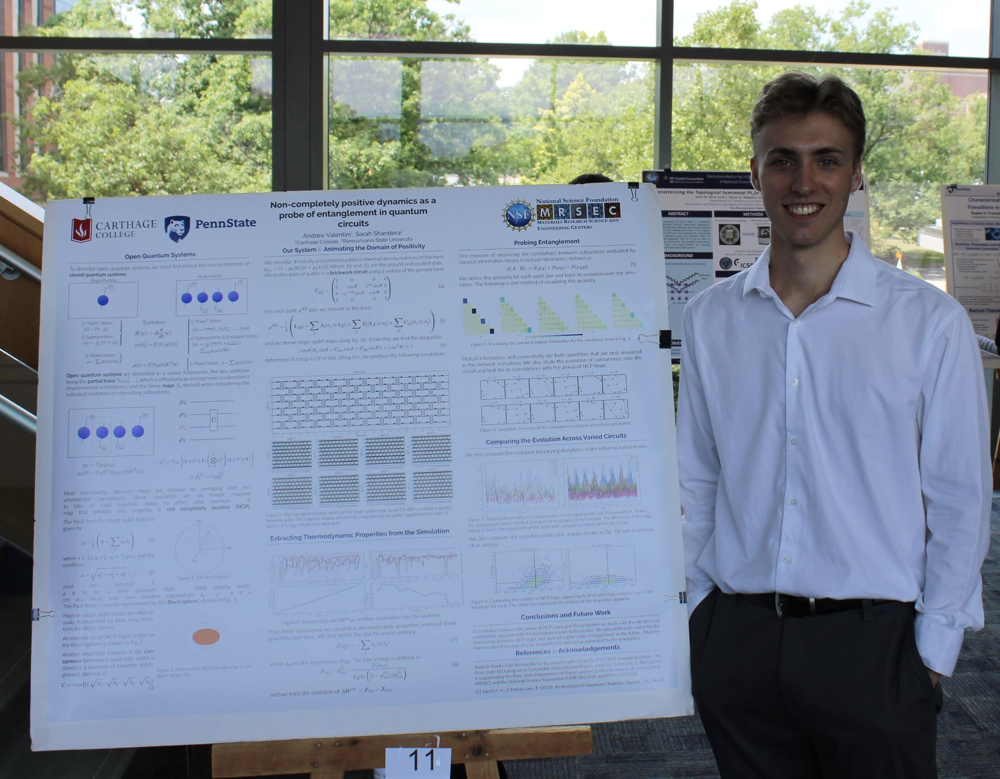

Reflection on Independently Learning GR

This is a short description of the research experience related to Image 1. The description gives a brief overview of the key points and findings. This is a short description of the research experience related to Image 2. The description provides insight into the objectives and results. This is a short description of the research experience related to Image 2. The description provides insight into the objectives and results.
Reflection on PSU REU
This is a short description of the research experience related to Image 2. The description provides insight into the objectives and results. This is a short description of the research experience related to Image 2. The description provides insight into the objectives and results. This is a short description of the research experience related to Image 2. The description provides insight into the objectives and results.
Reflection on Math Senior Thesis

This is a short description of the research experience related to Image 3. It highlights the contributions made through the project. This is a short description of the research experience related to Image 2. The description provides insight into the objectives and results. This is a short description of the research experience related to Image 2. The description provides insight into the objectives and results.